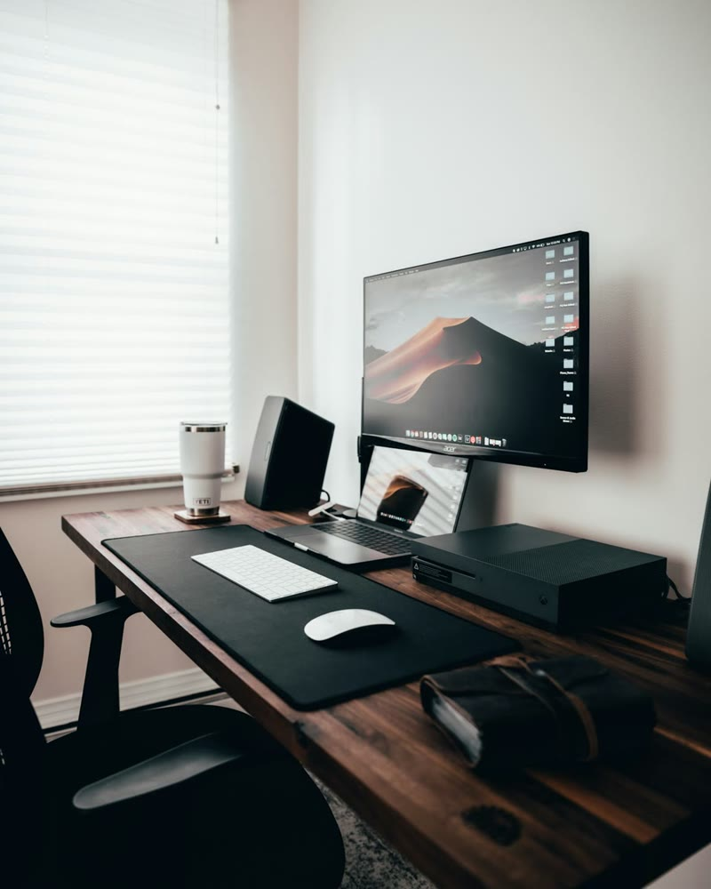

Desk Stocking Stuffers: Small Gifts for a Better Desk
Small desk gifts and stocking stuffers: cable clips, cable ties, a wrist rest, a desk tray, faux plants, a wireless charger and more for anyone with a desk.

In this guide
Small gifts work best when they solve a small, daily annoyance. Cables that slide off the desk, a phone that is always face down, loose keys and pens with nowhere to go. Everything here is small enough for a stocking and useful enough to stay on the desk long after the holidays.
For the cable mess
Adhesive cable clips stick along the desk edge and hold charging cables in place, so they stop falling down the back of the desk.
Reusable hook-and-loop ties bundle cables neatly, and undo just as easily when something moves.
For a bigger fix, the Cable Management Kit covers the under-desk tray, and the free checklist below walks through the whole job.
For the phone
An upright wireless charger keeps a phone readable and off the desk surface, and it ends the search for the charging cable.
For the small things
A bamboo tray gives keys, pens and small gadgets one place to live, which does more for a tidy desk than it sounds like it should.
A headphone stand gets headphones off the desk and keeps them within reach.
For comfort
A walnut wrist rest supports the wrists while typing and adds warm wood to the desk.
A clip-on fan clamps to a shelf or the desk edge and moves air without taking any floor space.
For a bit of green
Mini faux plants bring warmth to a desk or a shelf, with nothing to water and nothing to forget about.
For the whole desk
A felt desk mat is a slightly bigger gift that changes the look of the whole desk. It is soft under the keyboard and mouse, and quiet too.
How to choose
- Solve one annoyance. Cables, a phone or clutter each have a clear small gift.
- Stick to neutral colors. Wood, black and white fit almost any desk.
- Pair two small things. Cable clips with cable ties, or a tray with a plant, make a complete little gift.
For more ways to tidy a desk, read cable management 101 and the minimalist desk essentials.
Questions, answered
What are good desk stocking stuffers?
Cable clips, reusable cable ties, a wireless charging stand, a small organizer tray, a wrist rest and mini faux plants are all small and useful.
What is a small gift for someone with a messy desk?
Cable clips and cable ties together fix the most visible mess, and a small tray gives loose items one place to go.
What small gift suits a minimal desk?
Warm materials suit a minimal desk best: a walnut wrist rest, a bamboo tray or a felt desk mat.
Are desk gadgets good stocking stuffers?
Yes, when they fix a daily annoyance. A wireless charging stand and cable clips are used every day.